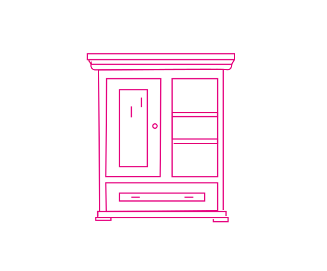

Voorbeelden van Dingen die je Kunt Pimpen

Inspiratie om Dingen Opnieuw Te Gebruiken
- Een vintage koffer als kattenbed – Een oude koffer met een zacht kussentje erin kan zomaar het favoriete plekje van je kat worden.
- Wijnkurken om onderzetters te maken – Lijm een paar kurken aan elkaar en je hebt een originele, duurzame set onderzetters.
- Een glazen pot omtoveren tot sfeerlamp – Door een lichtsnoer of kaars in een glazen pot te plaatsen, creëer je gemakkelijk sfeerverlichting.
- Oude deur als tafelblad – Maak van een antieke deur een stijlvolle tafel door er poten onder te monteren.

- Theekopjes als plantenpotjes – Perfect voor kleine vetplanten, en geeft een vintage look aan je interieur.
- Een houten ladder als handdoekenrek – Een oud trapje of ladder werkt prima als rek voor handdoeken of dekentjes.
- Fietswiel als memobord – Gebruik een oud fietswiel aan de muur en hang er notities of foto’s aan vast met knijpers.

- Verf krantenpapier en gebruik het als inpakpapier – Goedkoop, origineel, en duurzaam als cadeauverpakking.
- Houten kratjes als boekenplanken – Oude kratjes aan de muur maken een robuuste en functionele boekenplank.
- Vintage raam als fotokader – Plaats foto’s of kleine herinneringen achter de ruitjes voor een nostalgische uitstraling.
- Blikjes omtoveren tot kruidenpotjes – Oude conservenblikken zijn ideaal om kleine kruidenplantjes in te kweken.
- Petfles als vaas – Verf of decoreer een afgedankte petfles en zet er bloemen in voor een creatieve twist.

- Oude stoelen opnieuw bekleden – Geef oude meubels een tweede kans met nieuwe stoffen en kleuren.
- Een kapotte kast opknappen – Verven, nieuwe handgrepen, en je oude kast kan er weer uitzien als nieuw.